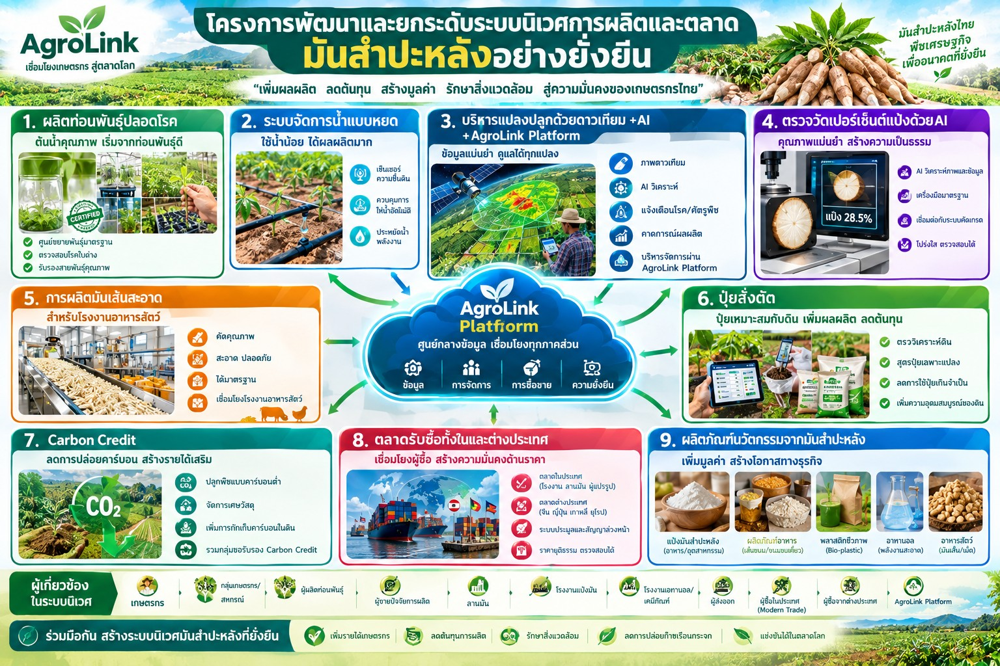

"ท่อนพันธุ์ปลอดโรค เกษตรกรมีตลาดแน่นอน ราคาเป็นธรรม คาร์บอนต่ำ" — เชื่อมเกษตรกรกับลานมัน โรงงานแป้ง โรงงานเอทานอล และอุตสาหกรรมกรดซิตริกด้วยข้อมูลและสัญญาซื้อขายล่วงหน้า
ฉบับร่างเพื่อพิจารณา — บริษัท ภักดี คอร์ปอเรชั่น จำกัด (AgroLink)
โครงการนี้มุ่งยกระดับระบบนิเวศมันสำปะหลังแบบครบวงจร ตั้งแต่ท่อนพันธุ์ปลอดโรคจนถึงการเชื่อมโยงผลผลิตเข้ากับกลุ่มผู้ซื้อหลักทุกกลุ่ม ได้แก่ ลานมัน โรงงานแป้งมันสำปะหลัง โรงงานเอทานอล และอุตสาหกรรมกรดซิตริก/เคมีภัณฑ์ ซึ่งรับซื้อในรูปหัวมันสด ผ่านการซื้อขายตามคุณภาพและสัญญาซื้อขายล่วงหน้า เพื่อสร้างความมั่นคงด้านวัตถุดิบ ความเป็นธรรมทางการค้า และเสถียรภาพราคาอย่างยั่งยืน
มันสำปะหลังเป็นพืชเศรษฐกิจสำคัญของประเทศไทยที่เชื่อมโยงกับอุตสาหกรรมต่อเนื่องหลากหลาย ตั้งแต่ต้นน้ำจนถึงปลายน้ำ อย่างไรก็ตาม เกษตรกรและผู้เกี่ยวข้องในห่วงโซ่อุปทานยังเผชิญปัญหาสำคัญ ได้แก่
ผู้ซื้อแต่ละกลุ่มมีความต้องการวัตถุดิบและเกณฑ์คุณภาพแตกต่างกัน โดยผู้ซื้อหลักรับซื้อในรูปหัวมันสดและกำหนดราคาตามเปอร์เซ็นต์แป้ง โครงการจึงมุ่งพัฒนาคุณภาพหัวมันสดและการตรวจวัด ณ จุดรับซื้อเป็นหลัก ส่วนมันเส้นสะอาดสำหรับโรงงานอาหารสัตว์เป็นช่องทางเสริมที่เกษตรกรอาจแปรรูปเอง เพื่อกระจายช่องทางตลาดและลดความเสี่ยงจากการพึ่งพาผู้ซื้อรายใดรายหนึ่ง โดยบูรณาการเทคโนโลยีสมัยใหม่และการบริหารจัดการห่วงโซ่คุณค่าเข้าด้วยกัน
นอกจากนี้ การเปลี่ยนแปลงสภาพภูมิอากาศทำให้ภัยแล้งและการระบาดของโรคพืชรุนแรงขึ้น ขณะที่มันสำปะหลังเป็นพืชทนแล้งที่ดูดซับคาร์บอนได้สูง การจัดการแปลงแบบคาร์บอนต่ำ เช่น ปุ๋ยสั่งตัดและการงดเผา จึงช่วยทั้งลดก๊าซเรือนกระจกและเปิดโอกาสสร้างรายได้เสริมจากคาร์บอนเครดิต (รายละเอียดในหัวข้อ 6)
โครงการแบ่งการดำเนินงานเป็น 5 ส่วน เชื่อมต่อกันตลอดห่วงโซ่ โดยมีแพลตฟอร์มข้อมูลกลาง (AgroLink) เป็นแกนเชื่อมข้อมูลการผลิต คุณภาพ และการซื้อขาย หัวมันสดคุณภาพจากต้นน้ำผ่านการตรวจวัด ณ จุดรับซื้อ แล้วขายให้ผู้ซื้อหลักตามเปอร์เซ็นต์แป้ง ส่วนมันเส้นสะอาดเป็นช่องทางเสริมที่เกษตรกรแปรรูปเองขายโรงงานอาหารสัตว์
การจับคู่การค้าและสัญญาซื้อขายหัวมันสดล่วงหน้า (Contract Farming / Matching): สร้างข้อตกลงซื้อขายที่กำหนดราคาตามเปอร์เซ็นต์แป้ง กับผู้ซื้อหลักที่รับซื้อในรูปหัวมันสด ได้แก่
นอกจากการขายหัวมันสด เกษตรกรหรือกลุ่มเกษตรกรที่มีความพร้อมอาจแปรรูปหัวมันเป็นมันเส้นสะอาดเองเพื่อขายโรงงานอาหารสัตว์ ซึ่งต้องการมันเส้นคุณภาพสูงเป็นแหล่งพลังงานแทนข้าวโพดเลี้ยงสัตว์ เป็นช่องทางเสริมเพื่อสร้างมูลค่าเพิ่ม โดยมีแนวทางสำคัญดังนี้
ผู้ซื้อหลักของโครงการรับซื้อในรูปหัวมันสดและกำหนดราคาตามเปอร์เซ็นต์แป้ง ส่วนโรงงานอาหารสัตว์เป็นช่องทางเสริมที่รับซื้อมันเส้นสะอาดจากเกษตรกรที่แปรรูปเอง
เกณฑ์ตัวเลขของผู้ซื้อแต่ละรายควรยืนยันกับผู้ซื้อโดยตรงก่อนกำหนดในสัญญา
| กลุ่มผู้ซื้อ | วัตถุดิบที่รับซื้อ | เกณฑ์คุณภาพสำคัญ | การเชื่อมโยงในโครงการ |
|---|---|---|---|
| ลานมัน | หัวมันสด | เปอร์เซ็นต์แป้ง น้ำหนัก ดินติด | จุดรับซื้อมาตรฐาน + บันทึกข้อมูลเข้าแพลตฟอร์ม |
| โรงงานแป้งมันสำปะหลัง (แป้งดิบ/แป้งดัดแปร) | หัวมันสด | เปอร์เซ็นต์แป้ง ความสด | สัญญาล่วงหน้า ราคาตามเปอร์เซ็นต์แป้ง |
| โรงงานเอทานอล | หัวมันสด | เปอร์เซ็นต์แป้ง ความต่อเนื่องของการส่งมอบ | สัญญาส่งมอบตามแผนการผลิตของโรงงาน |
| อุตสาหกรรมกรดซิตริก/เคมีภัณฑ์ | หัวมันสด | เปอร์เซ็นต์แป้ง ตามข้อกำหนดของผู้ซื้อ | จับคู่การค้าผ่านแพลตฟอร์ม |
| โรงงานอาหารสัตว์ (ช่องทางเสริม) | มันเส้นสะอาดที่เกษตรกรแปรรูปเอง | ความชื้น สิ่งเจือปน แป้ง เชื้อรา (ตาม 4.2) | Forward Contract ราคาตามเกรดคุณภาพ |
มันเส้นที่ส่งโรงงานอาหารสัตว์ต้องผ่านเกณฑ์ที่เคร่งครัด ดังนี้
| รายการ | เกณฑ์มาตรฐาน | เหตุผล |
|---|---|---|
| ความชื้น (Moisture) | ไม่เกิน 13–14% | ป้องกันเชื้อราและสารพิษอะฟลาท็อกซินระหว่างการเก็บรักษา |
| สิ่งเจือปน/ดินทราย (Sand/Foreign Matter) | ไม่เกิน 1.5–2% | ลดความเสียหายต่อเครื่องจักรผสมอาหารสัตว์ |
| ปริมาณแป้ง (Starch Content) | ไม่ต่ำกว่า 65–72% | ใช้เป็นแหล่งพลังงานแทนข้าวโพดเลี้ยงสัตว์ |
| เชื้อราและสารพิษ (Mold & Aflatoxin) | ไม่พบ | ความปลอดภัยของอาหารสัตว์ |
| ขนาดและลักษณะ | ชิ้นสม่ำเสมอ แห้ง กรอบ สีขาวสะอาด ไม่ดำหรือหมอง | บ่งชี้การตากแห้งและการเก็บรักษาที่ดี |
กิจกรรมของโครงการหลายส่วน เช่น ปุ๋ยสั่งตัด ระบบน้ำหยด ท่อนพันธุ์ทนโรค และระบบ Satellite + AI + IoT ช่วยทั้งลดการปล่อยก๊าซเรือนกระจกและเพิ่มความทนทานต่อสภาพอากาศ และสามารถต่อยอดเป็นรายได้เสริมจากคาร์บอนเครดิตให้แก่เกษตรกรและผู้ประกอบการ
แปลงมันสำปะหลังขายคาร์บอนเครดิตได้ แต่เนื่องจากเป็นพืชไร่อายุสั้น (เก็บเกี่ยว 8–12 เดือน) เครดิตจึงไม่ได้มาจากคาร์บอนที่กักเก็บในหัวหรือลำต้นเป็นหลักเหมือนไม้ยืนต้น แต่มาจาก กิจกรรมลดการปล่อยก๊าซเรือนกระจกในการจัดการแปลง (Mitigation Activities) ดังนี้
รูปแบบรวมกลุ่ม (Aggregation Model): แปลงของเกษตรกรรายย่อยมีขนาดเล็ก และค่าประเมิน/ทวนสอบสูง การยื่นรายแปลงจึงไม่คุ้มค่า โครงการจึงรวมพื้นที่ปลูกของเกษตรกร วิสาหกิจชุมชน สหกรณ์ หรือผู้ประกอบการ (เช่น ลานมันหรือโรงงาน) เป็นโครงการขนาดใหญ่ผ่านแพลตฟอร์มกลาง (AgroLink) เพื่อประเมินและทวนสอบพร้อมกัน
การรับรองดำเนินงานผ่าน T-VER ขององค์การบริหารจัดการก๊าซเรือนกระจก (อบก. / TGO) โดยกรมวิชาการเกษตรร่วมเป็นหน่วยรับรองโครงการภาคเกษตร ตามขั้นตอนดังนี้
ช่องทางรายได้เพิ่มเติมคือการใช้ข้อมูลคาร์บอนฟุตพริ้นท์ (CFP) ช่วยให้โรงงานผู้รับซื้อแสดงวัตถุดิบคาร์บอนต่ำแก่ลูกค้า ซึ่งเป็นเหตุผลให้จ่ายราคาพรีเมียมหรือทำสัญญาระยะยาวกับเกษตรกรในโครงการ
| กลุ่ม | ผู้เกี่ยวข้อง | บทบาทในโครงการ |
|---|---|---|
| ต้นน้ำ | เกษตรกรผู้ปลูกมันสำปะหลัง, วิสาหกิจชุมชนผู้ผลิตท่อนพันธุ์ปลอดโรค | ผลิตหัวมันคุณภาพ ใช้ท่อนพันธุ์ปลอดโรค ระบบน้ำ และปุ๋ยสั่งตัด และอาจแปรรูปมันเส้นสะอาดเองเป็นทางเลือก |
| กลางน้ำ | ลานมัน (ผู้รับซื้อและแปรรูปขั้นต้น), ผู้ให้บริการเครื่องจักรกลการเกษตร, ผู้ผลิตและจำหน่ายปุ๋ยสั่งตัดและระบบน้ำ | รับซื้อหัวมันสด และตรวจวัดคุณภาพ ณ จุดรับซื้อ |
| ปลายน้ำ | โรงงานแป้งมันสำปะหลัง, โรงงานเอทานอล, อุตสาหกรรมกรดซิตริกและเคมีภัณฑ์ (รับซื้อหัวมันสด); โรงงานอาหารสัตว์ (ช่องทางเสริม รับซื้อมันเส้นสะอาด) | รับซื้อผ่านสัญญาซื้อขายล่วงหน้าตามระดับคุณภาพ |
| หน่วยงานสนับสนุน | หน่วยงานภาครัฐ (กษ., กค.), องค์การบริหารจัดการก๊าซเรือนกระจก (อบก.), กรมวิชาการเกษตร, สถาบันวิจัย/มหาวิทยาลัย, สถาบันการเงิน, ผู้ให้บริการเทคโนโลยี (Satellite/AI/IoT) | นโยบาย มาตรฐาน งานวิจัย สินเชื่อ แพลตฟอร์มข้อมูล และการรับรองคาร์บอนเครดิต (T-VER) |
ไม่ว่าจะในฐานะเกษตรกร สหกรณ์ ลานมัน โรงงาน หรือพันธมิตรทางธุรกิจ ติดต่อทีมงาน AgroLink เพื่อขอข้อมูลเพิ่มเติมได้ทันที